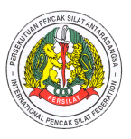

PERSILAT

The International Pencak Silat Federation - Persekutuan Pencak Silat Antarabangsa (abbreviated as PERSILAT) - is the world governing body for Pencak Silat. The organisation was established on 11 March 1980 in Jakarta and consists of the national organisations of of Indonesia (Ikatan Pencak Silat Indonesia (IPSI), Malaysia (Persekutuan Silat Kabangsaan (PESAKA), Singapore (Persekutuan Silat Singapura (PERSISI) and Brunei Darussalam (Persekutuan Silat Kabangsaan Brunei Darussalam (PERSIB).
The presence of PERSILAT constitutes as consequence of Pencak Silat development outside Pencak Silat source region, particularly in Europe and Australia. Pencak Silat as Malay cultural heritage should be preserved, built and developed in line with the noble values contained in Pencak Silat. It is based on the mutual responsibility that International Pencak Silat building and development is launched through PERSILAT, which basically is an effort in maintaining and improving harmonious life and honouring one another among nations.
PERSILAT management reflects the four Founding Countries, however since its establishment in 1980, the leadership of PERSILAT has been entrusted to IPSI.
PERSILAT was set up to govern, monitor, develop and promote all international activities associated with Pencak Silat. The annual plenary meeting of PERSILAT provides an evaluation forum for the implementation of the annual program and the formulation of the work programme for the following year. Every four years all member countries are invited to the PERSILAT Congress where members report on their activities for the previous period, and have the opportunity to discuss various matters concerning Pencak Silat.
PERSILAT has developed Pencak Silat into sports 'tanding' or 'olahraga' and artistic 'seni' competition events and has drawn up the 'International Pencak Silat Competition Rules' which govern all international competition events. A coordinated series of championships are held at national, regional and international level, with World Championships being held every two years. PERSILAT has so far successfully introduced Pencak Silat as a sporting event in the South East Asia Games, the Asian Games and the South East Asian University Games. It is currently striving for acceptance of Pencak Silat as an event in the Commonwealth Games and the Olympic Games.